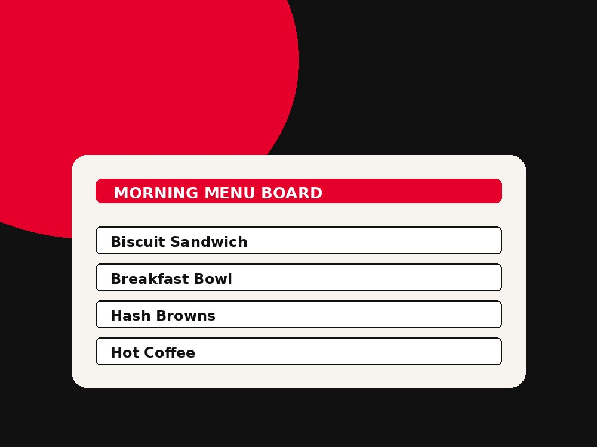

KFC Breakfast Menu USA
A plain-English, independent guide to KFC breakfast in the United States — what's actually available, typical hours, regular menu pricing, and how to find a location near you.

KFC does not operate one standardized breakfast menu across every U.S. restaurant. A limited number of franchise-owned locations serve breakfast items on their own schedule — it is not a nationwide program. Before planning a morning trip, confirm hours and menu with your specific restaurant using the location search or KFC's official site.
Everything you need to know, in one place
How KFC menu prices and calories work
Menu prices
KFC does not publish one fixed nationwide price list. Prices are set locally and can differ by state, city, and even by individual franchise owner, plus in-store, drive-thru, and delivery-app pricing can differ for the same item. See our menu prices guide for how to check accurate, current pricing for your location.
Calories & nutrition
Nutrition information is published per item by KFC and can vary slightly by preparation and location. When we reference calories or nutrition facts on this site, we link back to the source so you can verify the current, official figures before ordering.
Deals worth knowing about
We only list deals we can verify are currently running. Promotions change often and by market, so always confirm a deal is active at your location before ordering. See the full deals page for details and sourcing.
View Current DealsFind a KFC
This site doesn't operate a live restaurant database. For real-time addresses, hours, and breakfast availability, use KFC's official locator.
Frequently asked questions
KFC does not run a standardized, nationwide breakfast menu across the United States. A limited number of franchise-owned locations serve breakfast items on their own schedule — it's not a company-wide program. Availability depends entirely on the individual restaurant.
Opening times vary by restaurant, but many U.S. KFC locations open between roughly 10:00 AM and 11:00 AM for the regular lunch and dinner menu. Some locations open earlier. Check your local restaurant's listed hours for the exact time.
At the limited number of U.S. locations that do serve breakfast, service is typically offered during early morning hours before the regular menu begins. Exact hours are set by the individual franchise, so confirm directly with that restaurant before visiting.
No. KFC menus can vary by region, franchise owner, and individual restaurant. Some items, combos, and promotions are only available in certain markets or at certain locations.
Prices vary by location, market, and ordering channel (in-store, drive-thru, delivery app). There is no single nationwide price list, so the most accurate pricing comes from your local restaurant's menu board, the KFC app, or KFC's official website.
Use the location search above to get started, then confirm current hours, menu, and breakfast availability using KFC's official restaurant locator.